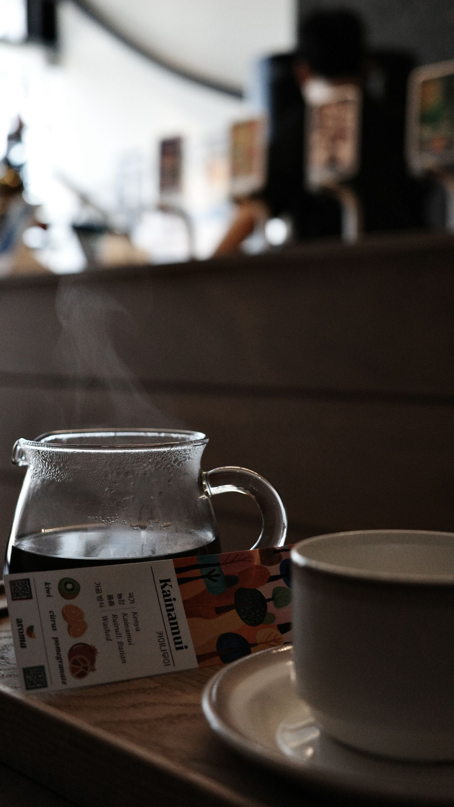
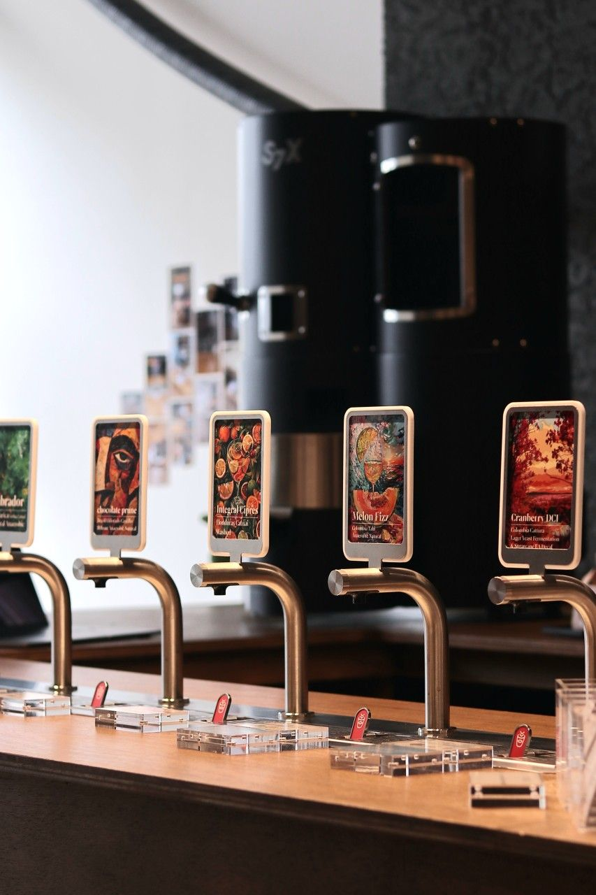
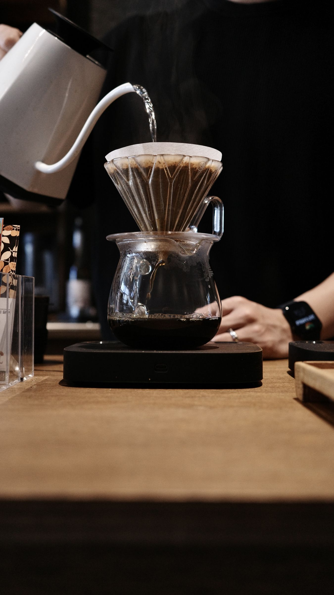

aroma coffee roastery & showroom
아로마 로스터리는 설득력 있는 스페셜티 커피를 로스팅 합니다.
매장 정보
- 평일
- 08:00-18:00
- 주말·공휴일
- 12:00-18:00
- 주소
- 서울시 강서구 마곡중앙8로 5길 63
디엠프라자 107호 아로마로스터리
기록과 소식
예시-

가을 커핑 세션 기록 아카이브 -

10월 매장 운영 안내 소식 -

로스팅 프로파일 노트: 케냐 아카이브 - 브루 바 9월 기록 아카이브